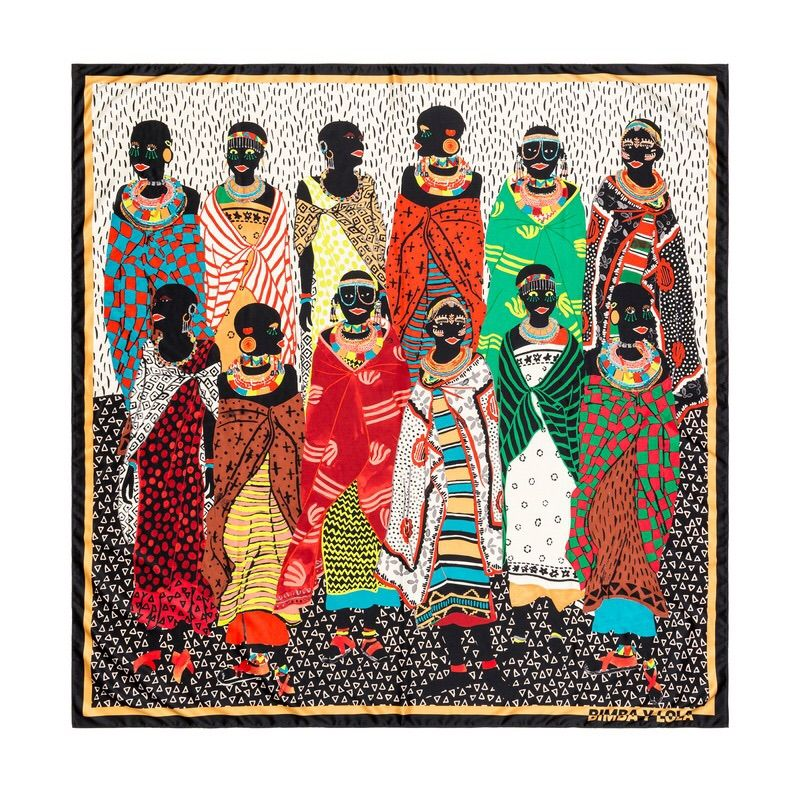

Apropiación Cultural.
¿Qué es la apropiacion cultural? La apropiación cultural es la adopción o uso de elementos culturales por parte de miembros de otra cultura.
También se conoce como apropiación cultural indebida, a menudo es retratada como dañina y se la considerada una violación del derecho de propiedad intelectual contra la cultura de origen. También es inevitable cuando múltiples culturas se juntan, la apropiación cultural puede incluir usar tradiciones, comida, símbolos, tecnología, lengua y canciones culturales de otras culturas

El apropiacionismo cultural
Resulta muy antipatico la apropiación cultural. Parece que estés contra el arte, el juego y la creatividad. Por desgracia vivimos en sistemas culturales carcomidos por la desigualdad, donde los artistas con recursos depredan el talento de comunidades desprotegidas.
El apropiacionismo es tendencia por que conviene al mercado. La industria necesita novedades cada cuatro meses.
Apropiación en la música
En el mundo de la música y más concretamente en los videoclips, los artistas recurren en numerosas ocaciones a este fenómeno.
Dos casos concretos y obvios con Coldplay. Un ejemplo clarisimo es el vídeo de Hymn For The Weekend .
Otro ejemplo es Katy Perry, que es una de las mayores referentes de este fenómeno, la cantante admitio la apropiación y ha reconocido sus errores. Al igual que ella, otras artistas como Iggy Azalea, Lily Allen o Maley Cyrus han reconocido haberse aprovechado de ciertas culturas. En la mayoria de los casos de la estetica de la cultura afroamericana, siempre tomándola desde el punto de vista occidental e incorporando sus elementos como meros adornos.
Apropiación en la moda
Si bien la moda siempre ha bebido de la riqueza visual y el exotismo de otros pueblos y culturas, hay ciertas referencias, fundamentalmente de carácter racial o religioso, que pueden resultar ofensivas.
En el 2012 "Victoria's Secret Fashion Show" la modelo Karlie Kloss representaba la unión de los peregrinos y los nativo americanos que tradicinalmente se asocian al día de Acción de gracias, ella portaba un penacho, tambien conocido como toque de guerra, que es un articulo sagrado y restringido por las culturas nativo americanas, al ver esto las personas se sintieron ofendidas.